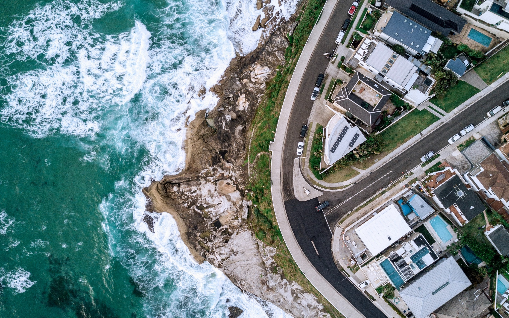

{% extends 'menu/base.html' %}    <!--a-->
{% load static %}

{% block content %}               <!--a-->

<div class="map_img_box text-center">         <!--a-->
    <div class="filter">
        <h2 class="pt-1">العنوان <i class="fas fa-map-marker-alt"></i></h2>
        
        <!-- <div><a href="https://g.page/meddcoffee?share" target="_blank">
            انقر للذهاب إلى الخريطة</a></div> b -->

        {% for map_url in map_urls %}                           <!--b-->
        <div><a href="{{map_url.mapURL}}" target="_blank">انقر للذهاب إلى الخريطة</a></div>
        {% endfor %}
    </div>
</div>

{% endblock %}
